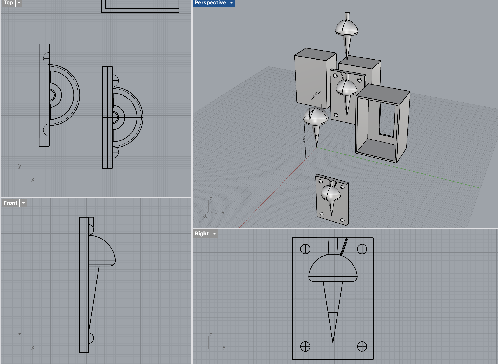
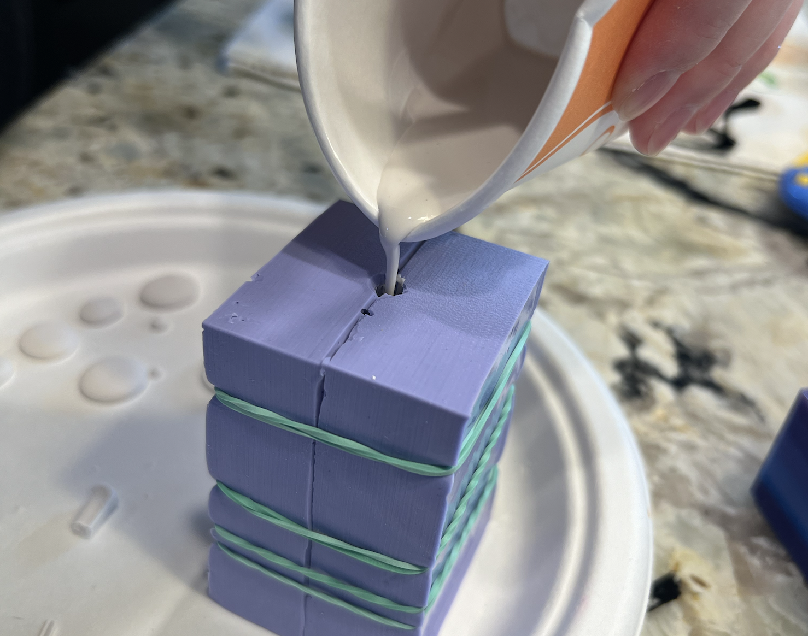
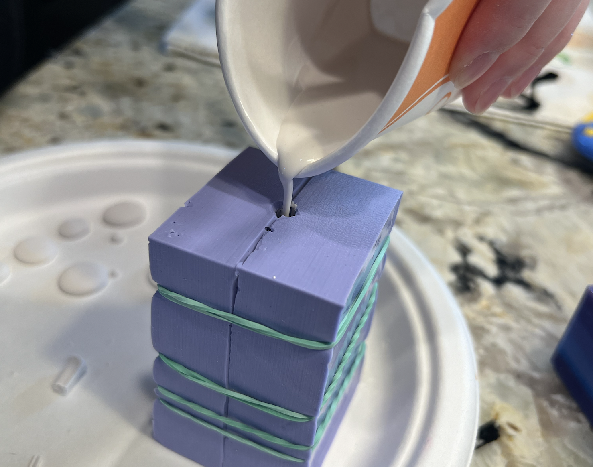
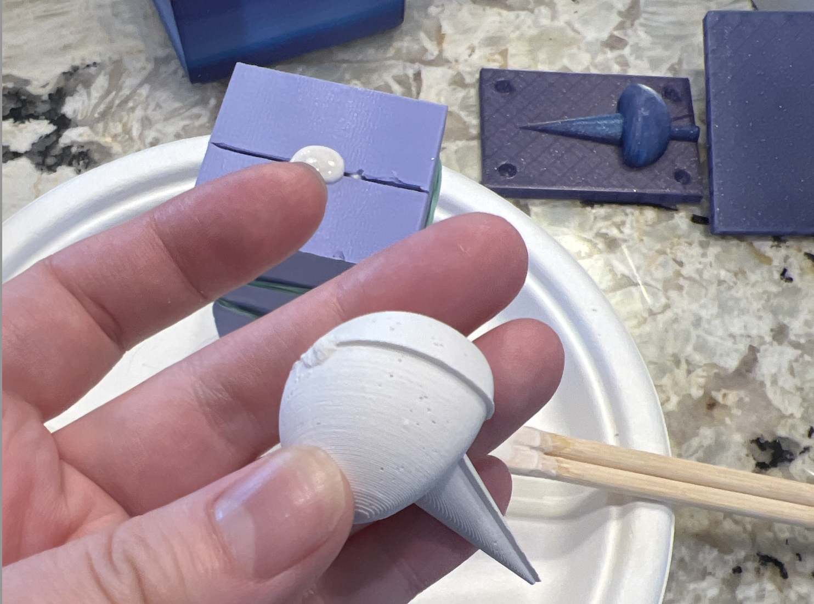
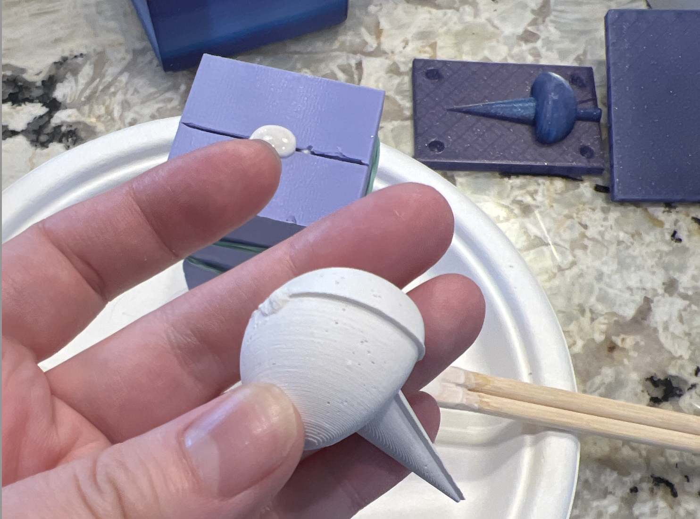
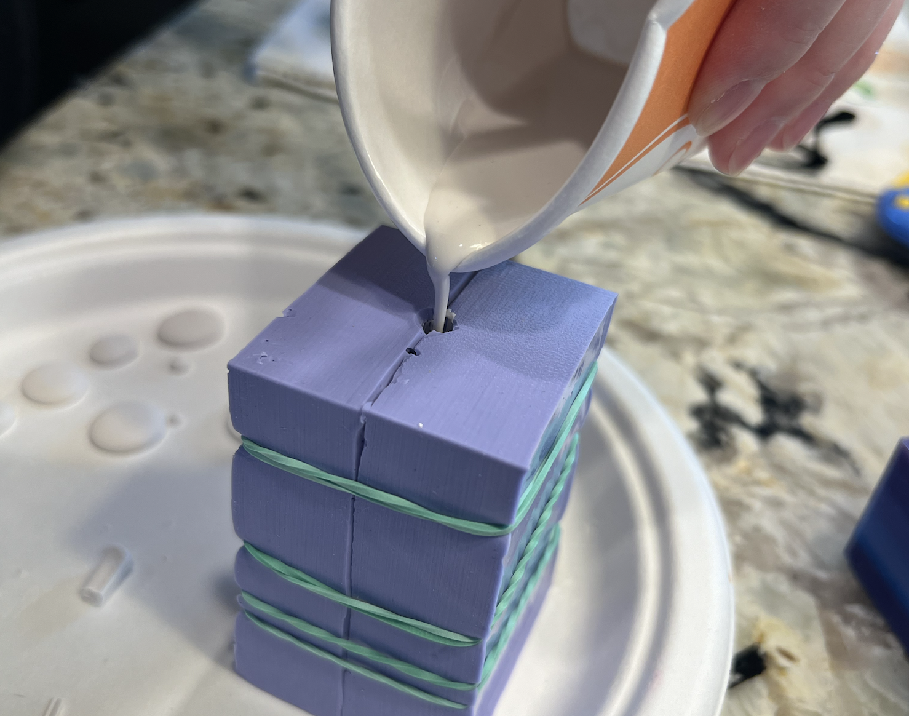
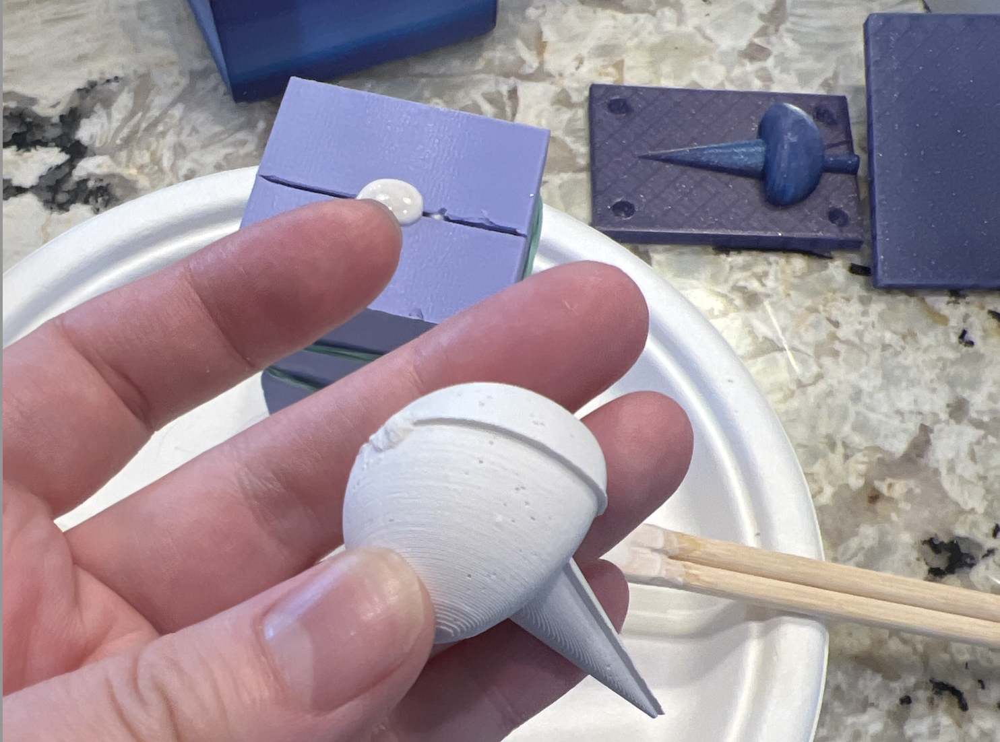

part1: molding
1/ design and begin fabrication of a 2-part (silicone) mold.
2/ design the master part in CAD first then design your mold
3/ design a mold to cast your mold in
4/ 3d print your molds-for-molds
5/ test issues such as printing keys, parting lines, and sprues
1/ design and begin fabrication of a 2-part (silicone) mold.
2/ design the master part in CAD first then design your mold
3/ design a mold to cast your mold in
4/ 3d print your molds-for-molds
5/ test issues such as printing keys, parting lines, and sprues
part2: casting
1/ use the mold to cast at least 4 identical parts (e.g. in plaster).
2/ casting takes time to cure, mix the Oomoo well! (poorly mixed silicone will not cure well. remember to add sprues to all high points)
1/ use the mold to cast at least 4 identical parts (e.g. in plaster).
2/ casting takes time to cure, mix the Oomoo well! (poorly mixed silicone will not cure well. remember to add sprues to all high points)
Part1 Printing the mold
Wouldn't casting little figures to place in peoples gardens be so fun? I thought about casting a little figure of my daughter.
But lesson learned from the lamp project, I reduced scope and decided to start with a mushroom.


I was about to print my mold, but soon realized it was a giant mushroom (300mm) and I didn't scale it properly in the design. So I went back to the drawing board.
I was about to print my mold, but soon realized it was a giant mushroom (300mm) and I didn't scale it properly in the design. So I went back to the drawing board.
Part2 designing again...then print and casting
Mushroom designing round 2, a more resonable size.

 

 



Learnings:
I was very nervous about accidentally pouring the plaster down the sink, but luckily that didn't happen
+ Oomoo was very easy to mix, getting the bubbles out took some time
- the way I design the box, it was very hard to push the mold out, some adjustments I would make is, box thickness 2mm --> 1mm, so the walls could be more bendy
- my casted mushroom was 'off' and I thought I didn't align my keys properly. But I realized while I was designing, my keys were not aligned in the same location from the edge of the mold. That's why it was 1mm off alignment. So for my last 3 casted mushrooms, I manually aligned the inside mushroom since my keys weren't working corrently. (if I had more time, I would go in and redesign the keys to align correctly and reprint my mold)
- for the plaster, the internet said 2-3 parts water and 1 part plaster... it was so wrong! basically it was me adding a little water to a disposable cup and then gradually scooping in plaster until I could get it to a yogurt consistancy.
+ after the first cast, preping the mold and the plaster was a breeze!
Final
MUSHROOMS!! They turned out pretty cute! Unfortuntely plaster isn't waterproof, so I can't keep these outside in the PNW